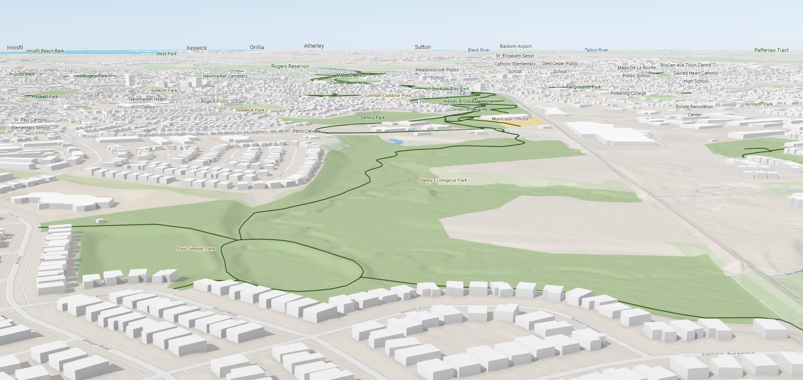

Experience Builder Dashboard

ArcScene Viewer
Experience Builder

text
ArcScene
text
InstantApp
QGIS/Leaflet

ArcGIS Indoors

Though we were unable to experiment with ArcGIS Indoors - we explored its documentation to gain a better understanding of it’s use in the indoor mapping world. From a 2D floorplan - ArcGIS Indoors can extract features such as walls and doors, as well as annotate extracted features with information such as room name and use. Utilizing machine learning algorithms such as convolutional neural networks (CNNs) or graph-based methods - these models learn to recognize and interpret the features of the newly created indoor environment.
Map generation within ArcGIS Indoors allows for detailed layouts, pathways and navigation between rooms and floor levels. ArcGIS Indoors even allows for the user to determine precise location through localization techniques such as Wi-Fi signals.
ArcGIS Indoors allows for the development of user-friendly interfaces and applications to allow access to the indoor mapping - providing navigation instructions, route planning, point of interest look-up and real-time updates.